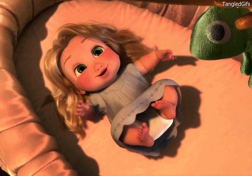

1º momento
Um dos momentos mais importantes da minha vida foi quando minha irmãzinha nasceu
Um dos momentos mais importantes da minha vida foi quando minha irmãzinha nasceu
A chegada da minha cadela "demonio", disfarçada de anjo

Algumas lembranças agradaveis de quando eu viajava para o interior, meio do mato, sem internet. Otimos momentos

Aquele momento da vida que eu era apaixonada por Crepúsculo e sonhava que me casaria com Edward Cullen (sonho até hoje)

A festa de 15 anos, com direito a valsa e cerimonia. (me sentia uma princesa)

A primeira vez que andei de avião, eu rezei tanto para não cair. Depois da viagem até tive vontade de virar aeromoça

Foi uma sensação unica ver meu time do coração ganhando o Paulistão 2021 (nunca ganha nada)

Com certeza estar no proa é um dos melhores momentos da minha vida, todas as pessoas e historias que vou guardar no coração para sempre.